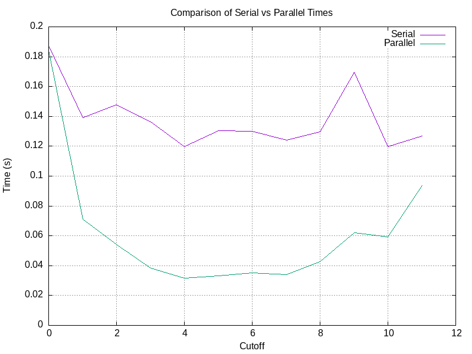
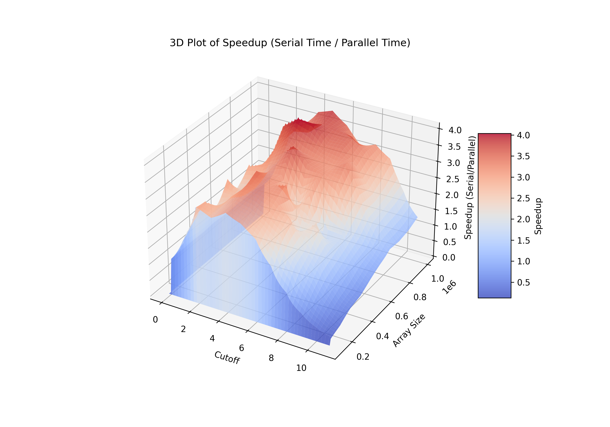

Overview
The challenge evaluates how merge sort behaves across different cutoffs and array sizes. The workflow produces CSV datasets and automated plots for analysis.
Approach
- Implemented serial and parallel merge sort in C++.
- Measured runtime across varying array sizes.
- Benchmarked cutoff thresholds for hybrid sorting.
- Generated CSV datasets and Gnuplot visualizations.
Automation
- Python helpers for aggregating timing runs.
- Gnuplot scripts for 2D/3D surfaces.
- Reproducible outputs committed to the repo.
Performance Explorer
Switch between datasets to inspect how serial and parallel timings shift.
Serial
Parallel

